Runtime errors are the errors that occur when you try to run your program. Runtime errors really come in three varieties:
- For some errors, the Java Virtual Machine will step in and tell you you've done something wrong. Like syntax errors, such "program crashes" are often annoying, but ultimately for the best.
- For other errors, the JVM is unable to print an error message; your program just quits working altogether. With such "hanging programs", it's obvious that something is wrong, but, other than the symptoms, you receive no other help in solving the problem.
- The last group of errors, the really difficult errors, occur silently and without warning. These logical errors are those that cause your program to behave incorrectly, but, unless you're on the lookout, you might not even notice that anything is wrong.
Let's start by investigating the first of these, those errors that "announce themselves".
Errors that Announce Themselves
An error that prints an error message when your program is running is called a runtime exception. Runtime exceptions are nice for two reasons.
- First, when the Java Virtual Machine (JVM) notices that something is
wrong as your program is running, it makes an effort to notify you.
It does this by creating and throwing a special kind of object
(called a
Throwableobject) that contains information about what went wrong. Here's a picture of some of those classes:
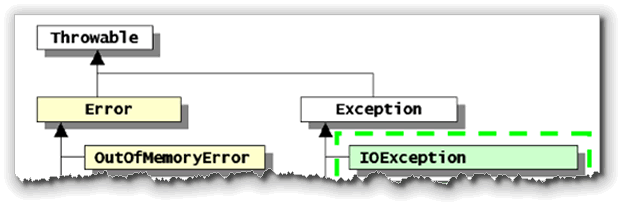
- Second, Java's exception-handling mechanism allows you to intercept and correct many runtime exceptions. You'll learn more about the exception mechanism and how to put it to work in the next lesson in this unit.
You'll learn how to trigger your own exceptions later in this lesson.
Later in the course, you'll learn how to use Java's try-catch
statements to intercept those objects. For right now, though, let's start
by taking a look at what a runtime exception looks like when it is thrown.
The RuntimeError Applet
Here's an applet named, RuntimeError, that we'll use to study some of the most common types of runtime errors. The RuntimeError applet allows the user to trigger three types of runtime errors by pressing an appropriate button (as discussed in the lesson).
To study the program, you'll want to open the source code by clicking the link in the last paragraph, then, run the applet, by clicking the link in this sentence. Here's what the applet looks like when it runs:
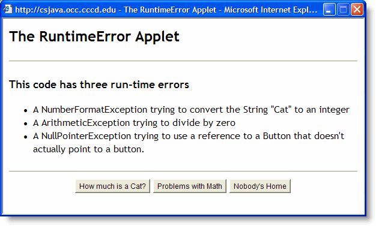
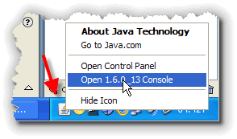
Before you jump on ahead, and start pressing the applet's buttons, though, take a moment to open your browser's Java Console window, by right-clicking the little "coffee-cup" icon in the task bar, and then choosing Open Console. This will let you see the errors as they occur.NullPointerException
Once your Java console is open, go ahead an press the "Nobody's Home" button. You'll see something that looks like this:
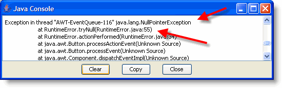
NullPointerException and the problem occurs in
RuntimeError's tryNull()
method, at line 55. The tryNull() method was
called from the actionPerformed() method, at
line 34.
If you look up the code for the tryNull() method,
you'll find this:
// RuntimeError.tryNull()
void tryNull()
{
b.setLabel("Uh Oh!");
}
Looking at this code, the problem is not immediately obvious.
We could trace back through the code to the
actionPerformed() method that called
tryNull(), but that still won't lead us
to the problem.
What It Means
Instead, to find the error, you have to understand what
NullPointerException means.
A NullPointerException is Java's way of saying:
"This object variable doesn't refer to a real object".
You can't send a setLabel()
message to a Button object that doesn't exist, and
so the JVM simply steps in and prints an error message.
Remember,a NullPointerException really means "unititialized object"
Looking back through the code to where
the Button variable b is defined you'll
find:
Button b; // This has the value null
Initialize the Button using a constructor, and
the problem will go away.
ArithmeticException
When you press the "Problems with Math" button, your Java Console window will look something like this:
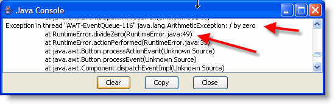
ArtithmeticException whenever
you ask it to perform an illegal artithmetic operation. As you
can see from the message, the error occurred in the
divideZero() method. If you pull up the method,
which is shown here, you can see that, sure enough, the
program attempts the impossible:
// RuntimeError.divideZero()
void divideZero()
{
int numerator = 3;
int denominator = 0;
int problem = numerator / denominator;
}
Unlike NullPointerException, the
ArtithmeticException is usually not a puzzle when it
occurs. The solution, too, is usually stratightforward:
"don't do that". With careful programming you should be
able to eliminate this exception.
Note : You might wonder why the divideZero() method could not simply say : int problem = 3 / 0; The reason is because Java's compiler is smart enough to recognize that this as an error and won't compile the code.
NumberFormatException
The third runtime error exposed by the RuntimeError applet
is a little different than the other two. Java generates a
NullPointerException in an attempt to protect the
integrity of the JVM, and it throws an
ArtithmeticException to protect the integrity of
the mathematical universe as we know it.
The last runtime error generated by this applet falls into neither of these categories. If you press the "How Much is a Cat" button, Java generates a message that says, essentially, "I don't know how to do that:"
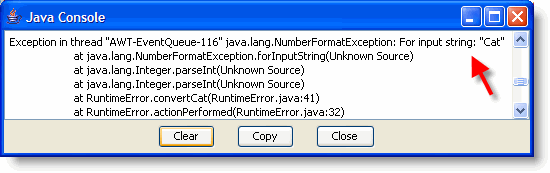
Integer.parseInt() method—a method in the
standard Java class library. Both of the previous runtime errors
were intrinsic runtime errors—errors generated directly
by the JVM. This is not.
What it Means
If you trace back from where the original error occurred, you
find that the method convertCat() was the last time
that RuntimeError.java had hold of the code. Let's take
a look:
// RuntimeError.convertCat()
void convertCat()
{
String num = "Cat";
int bad = Integer.parseInt( num );
}
As you can see, the error is caused by asking the
Integer class to convert the String
Cat into an int. This is not an
impossible task—at least not impossible in the same sense that
dividing by zero is impossible.
It is also harder to protect against. As you found out in
previous assignments, when you get input from your users, they
can type, essentially, anything into a TextField.
When you convert the text contained into that TextField
to a number, it is almost impossible to first check the contents
of the TextField to be sure that the conversion will
succeed.
For that reason, Java provides a way to recover from this sort of
runtime error—the try-catch mechanism.
You'll learn how to apply try-catch
later in the course.
Hanging Programs
Not all programs are as obliging as the runtime exceptions. Some programs simply stop responding to user input. These programs are called "hanging programs". It's obvious, when you run such a program, that something is wrong.
Discovering what the problem is, and fixing it, however, is sometimes a little more difficult. Knowing about the most common reasons for hanging programs helps.
Hanging programs usually stop responding for one of two reasons:
- You've written an "endless" or "dead" loop.
- You have a "system" error.
Endless Loops
Endless loops are the most common reason for your program to hang. To avoid endless loops in your program, double check for the unavoidable condition that you met earlier in this course.
Remember that an unavoidable condition is one where the loop is
always entered and is impossible to exit. An unavoidable
condition almost always involves confusing the AND
and OR operators in a compound boolean condition
like this program which, supposedly, collects pension payments
from employees between 21 and 65, and, then, at age 65,
disburses the payments:
int age = getStartingAge();
while (age >= 21 || age < 65)
{
makePensionContribution();
age++;
}
collectPensionBenefits();
What actually happens is that, because the programmer used OR instead of AND, the program collects pension contributions forever, but never pays out a dime.
There is one other situation where an endless or semi-endless loop is common in Java programs—wayward animation attempts.
Wayward Animation
Often, programmers will attempt to create an animation loop
inside the paint() method like this:
// An Unsuccessful Animation Attempt
public void paint(Graphics g)
{
int x = getSize().width / 2;
int y = getSize().height / 2;
int dx = 5, dy = 5;
while (true)
{
x += dx;
y += dy;
if (x > getSize().width || x < 0)
dx = -dx;
if (y > getSize().height || y < 0)
dy = -dy;
g.drawString("@", x, y);
}
}
This loop attempts to move a bouncing @ around the screen.
The problem is that, under normal operations, the
paint() method doesn't actually display its ouput
on the screen. The actual "display updating" occurs "behind the
scenes" after the paint() method is finished.
By coding an endless loop inside the paint() method,
your program never gives Java's background tasks a chance to run.
If you create an applet using this code, and then run it in
appletviewer, you'll see that you won't even be able to close the
appletviewer window by clicking on the close button. Java doesn't
have any time to pay attention to the close button because you're
hogging all of its attention.
System Errors
In addition to hanging because of an endless loop, your program might also hang because of a "system error." This catch-all phrase covers a lot of ground. Most of the time, the system error really doesn't have anything to do with your program at all, and there's nothing you can do about it. Sometimes, though, you can change something in your program that will prevent the system error from occuring.
Most system errors, at least those where the system hangs, occur for one of two reasons:
- A necessary computer resource is depleted.
- Multiple programs have "deadlocked" waiting for access to the same resource.
An example of a system resource is the Graphics
class. If you confine your use of the Graphics
class to the Graphics object you receive in the
paint() method, you won't have any problems.
If, however, you use the getGraphics() method
to draw outside of the paint() method, like this:
public void drawHead()
{
Graphics pen = this.getGraphics();
pen.fillOval(0, 0, getWidth(), getHeight());
}
and, you forget to call the dispose() method after
you are finished, you may exhaust your operating system's
supply of "graphic device contexts". When this happens, your
Java program becomes unable to repaint itself. It doesn't hang,
exactly, but for all intents and purposes, it's dead.

Other resources that are often similarly limited and that can
result in similar resource depletion include Color
objects, threads, streams, and network connections.
Deadlock
Deadlock occurs when two processes, or threads, both attempt to acquire a resource used by the other. If you have an input and output file, for instance, one program may open the input file first, while the other opens the output file first. Both programs can get stuck and wait forever for the other program to give up the resource which it needs.
Deadlock is common when it comes to writing multi-threaded programs, something that we haven't done in this class.
Logical Errors
Logical errors are different than the other errors we've discussed up to this point. It's not just that logical errors are harder to correct—but they are—it's that it is incredibly difficult to discover that an error has occurred at all. In fact, an entire phase of the software development cycle—the testing phase—is devoted to discovering such hidden, unrevealed errors.
Throwing Exceptions
So far, we've talked about catching exceptions. Let's look at this from another angle, though. How can you generate an exception in your own code? And, maybe more importantly, why would you want to do that?
The reason why is pretty simple. When you create a user-defined type, you want it to be robust; you want to make it difficult, (or better yet, impossible), to make an inadvertant programming error by using your new type. You can use exceptions to ensure that your user-defined classes aren't used incorrectly.
An Example
Let me give
you an example. If you try to store the word "cat" into an
int variable, the Java compiler issues a warning message
because that's an inappropriate use of the int type. The
int type is robust, because users can't accidentally create
int variables that contain invalid values.
On
the other hand, if you've created a RationalNumber class,
that contains a numerator and denominator, the compiler won't
prevent someone from setting the numerator of an object to 0, which
is equally inappropriate, because it doesn't have any knowledge about
how Rational objects should work.
You, however, can prevent this inappropriate use yourself, by throwing an exception when it occurs.
Use exceptions to make your classes robust.
How to Throw an Exception
Actually, it's pretty easy. Suppose you had a Widgets class.
To create a Widget, you pass a single int
argument telling the constructor what kind of Widget
you want. The only valid values are 1 through 4. Anything else should produce
an exception.
To do this, use Java's throw statement, along
with the InvalidArgumentException class like this:
public Widget(int widgetType)
{
// only valid types are 1…4
if (widgetType < 1 || widgetType > 4)
throw new IllegalArgumentException("Invalid type: " + widgetType);
// Remaining code is skipped when exception thrown
}
When you call this constructor with an illegal argument, the if
statement creates an IllegalArgumentException object, with the
error message "Invalid type" (along with the value that was passed
to the constructor), and throws it up the call stack.
For anything other than an illegal parameter, you can just use
the RuntimeException class, and describe the error that
occured in the constructor.
Assertions
An assertion is a statement that you add to your code about something that
should be true as your code runs. You can add assertions as comments,
like this example from a banking program:
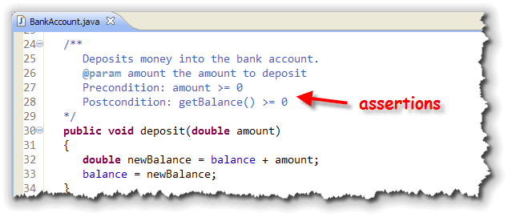
These assertions state what should be true before you call the method (called a precondition) and what should be true after the method runs (called a postcondition). You can add pre and postconditions to methods, selection statements and loops. When Java 1.4 was introduced, a new keyword (assert) was added
to the language to allow programmers to check their assertions at runtime.
Here's the same function, with the assert keyword used to
check the preconditions and postconditions:
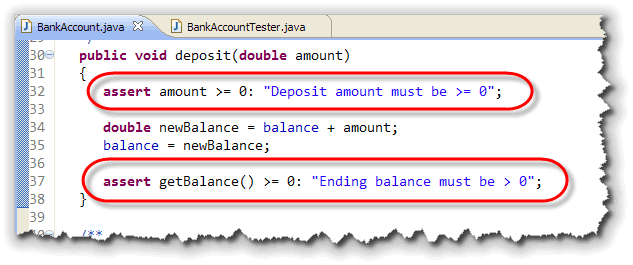
Notice that theassert statement starts with the keyword assert,
followed by two parts:
- the
booleancondition you expect to be true, if your program is performing correctly. - a
Stringexplaining what the problem is, to be displayed in the event your assertion fails.
When you run the program, the assertion is checked. If it is found false,
then the throws an "automatic" AssertionException. However, if you
create a small test program, like this:
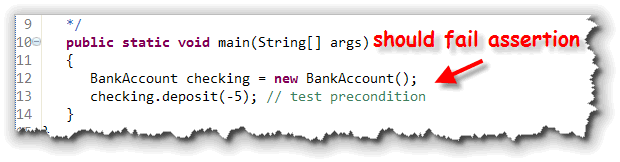
you might be surprised to find that an assertion is not triggered, even though we pass a negative value to thedeposit() method.
Why?
That's because assertions are turned off by default. If you want to
check your assertions, you'll need to enable them by passing the
-enableassertions flag when you run your program. In Eclipse, you
do that through the Run Configuration dialog and the JVM Parameters
text area, like this:
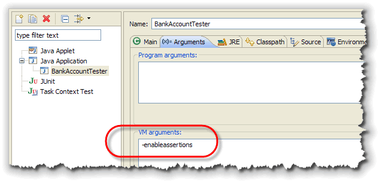
Instead of -enableassertions, you can use the shortcut flag, -ea instead. When you enable assertions and run the testing program again, you'll find an exception thrown, along with your message: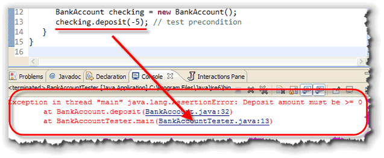
Assertions or Exceptions
Assertions are similar to exceptions, but they are really not the same.
- Exceptions are always active. Assertions are only checked during development.
- Assertions allow you to test the internal assumptions you've made about the calculations in your program.
- You must specifically tell the Java Virtual Machine to enable assertions when you run a program that contains them.
- Assertions are part of the Java language, not part of the class libraries like exceptions.
According to Sun, "Experience has shown that writing assertions while programming is one of the quickest and most effective ways to detect and correct bugs. As an added benefit, assertions serve to document the inner workings of your program, enhancing maintainability."
Although the example I've shown you uses assertions to check the parameters passed to a method, in general, you should not do that. Here's what Sun has to say about using assertions for checking parameter preconditions:
By convention, preconditions on public methods should be enforced
throwing particular, specified exceptions. Do not use assertions to check the
parameters of a public method. An assert is inappropriate
because the method guarantees that it will always enforce the parameter check.
It must check its parameters whether or not assertions are enabled.
Further, the assert construct can only throw exceptions of the
AssertionError class; it does not throw an exception of the
specified type such as IllegalArgumentException.
Coming Up ...
In this lesson, you learned to recognize and avoid different kinds of runtime errors. You also learned how to throw exceptions and use assertions to make your classes more robust.
In the next lesson, you'll learn how to write unit tests to ensure that your programs don't contain any logical errors.